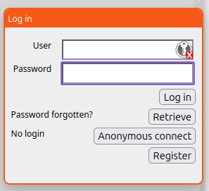
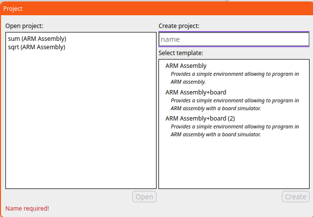
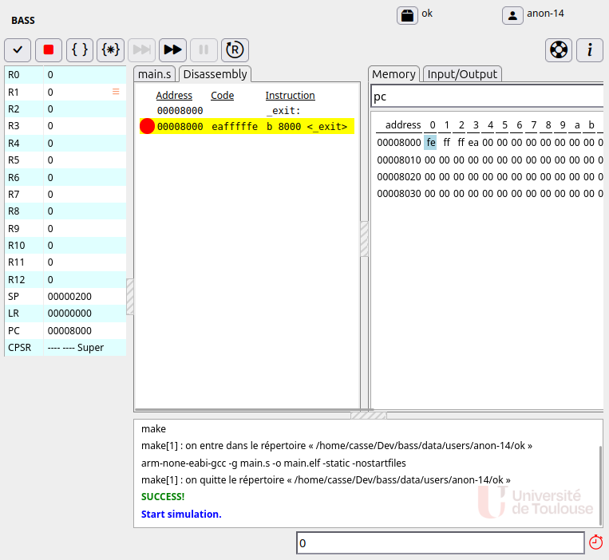
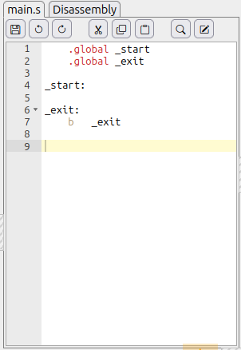
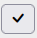
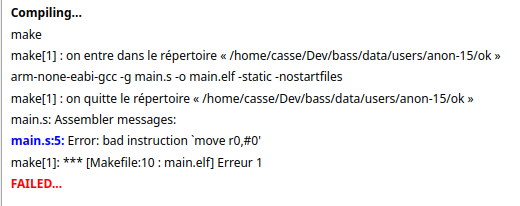
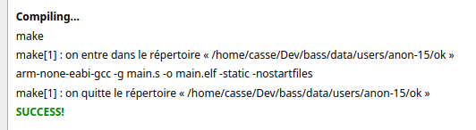
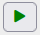
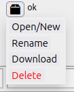
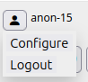

Before using Bass, you have to connect. Depending on the configuration, there are different ways:
Once connected, you can select a former project or create a new one:

In this dialog, you have a select a project to work with. Either you select a project on the left (and click Open), or you can create a new one on the right.
To create a new project, you have to type the name of the project (different from the existing ones), to select a template and to click on Create button. Templates provides different context of programming and experimenting: different architectures, different configurations of hardware and input/output devices. Each template has a name and a few lines of description.

Except for top-level bar with button, the screen is divided in 4 main panes:
Depending on the chosen template, you may have one or several source files. For other ones, you can add as many sources as you want.
To edit a source, select it by clicking in the tab header and you get a classic editor:

This source editor supports classic keyboard shorts cut for fast edition with the tool button at top (from left to right):
Once the source have been typed, you can launche the compilation by clicking on

.If the compilation, you can get a message like:

In this case, you have to fix the errors and re-launch the compilation to finally succeed as below:

Once the compile succeeded, you can run and debug your program by clicking on the top-bar button

, that is now enabled.
From the main screen, it also possible to manage the current user information and your project.

By clicking on the Project button, it is possible:

By clicking on the User button, you can:
Notice that logging out an anonymous suer does not allow to log in to the same anonymous user later.